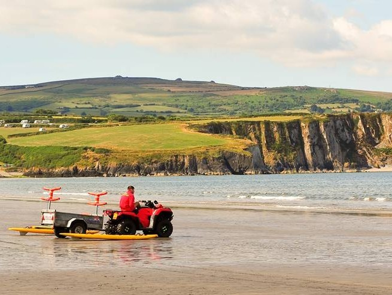

Newport is a small town on the north coast of Pembrokeshire.
It is known for its beautiful beach and views of the Preseli Hills.
Many visitors enjoy walking along the coast path here.

Interesting Facts About Newport
Newport Sands is a large sandy beach popular with surfers.
The nearby Preseli Hills are famous for their connection to Stonehenge.